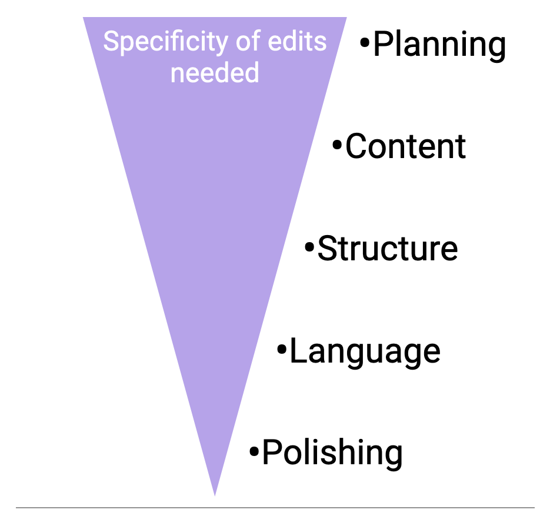

The following information is meant to assist you when asking for and giving feedback on scientific writing projects. The idea here is to give authors a general framework and language for discussing the stage that their text is at and the type of feedback that they’d like, and to give editors some guidelines for what to think about and what to pay attention to when going through the text.
The important thing here is that you - as an author - can articulate the type(s) of feedback that you want/need at any given time, and that you - as an editor - can understand the type(s) of feedback that an author is asking for.
Preliminary questions
When you ask for, or are asked to give, writing feedback, first discuss the following questions with the author/editor:
What are the requirements for this text? / What is the planned destination for this text? / Who is the audience for this text?
(ex. If a grant proposal, what does the granting agency want to see in the proposal?; If a journal article, what journal(s) is the author considering submitting to?; etc)
What is the current status of the text and what type of feedback does the author want?
(see below)
What, in particular (a certain idea/concept or a particular section), is the author struggling with or wanting help on?
The categories of writing feedback

Planning
The author:
- is still chewing over ideas
- has done a lot of reading & research
- has some notes
- has a rough outline/overview
While working through the text, the editor should ask themselves:
What is/are the main point/s the author wants to make?
What is the overarching story of this text?
What does the audience need to know in order for the author’s main point/s to have an impact?
The editor should:
- familiarize themselves (if they are not already) with the general topic / study system / field of research
- discuss the project with the author
- clarify questions/aims/goals of the text
- identify areas where further reading & research is needed
- help to develop an approach, structure, and maybe an outline
Content
The author:
- has a first draft (though it’s not pretty, and many ideas may be still half-baked) or at least a thorough outline
- has thought about out the general content
- has a preliminary idea of the over-arching structure of the text
While working through the text, the editor should ask themselves:
Is the central idea of the text framed in an interesting and engaging way?
Is the author’s main point clearly explained, and enough background/ contextual information given for it to make sense?
Does the framing/contextualization of the topic make clear why this topic/problem is important?
Is anything missing? Does anything seem superfluous/unnecessary?
Does every method have a result and vice versa?
Do the data and analysis support the conclusions?
The editor should:
- use comments to put feedback into the text
- identify areas that aren’t clear, ideas that don’t fit, and concepts that are missing
- only note language-related edits when necessary to clarify the meaning of a sentence
- focus on the content of the text and not on how it is written
Structure
The author:
- has a full draft of the text
- has basically finalized the draft content, and fully fleshed out the ideas
While working through the text, the editor should ask themselves:
Does each sentence, paragraph, and section have a clear point/message?
Can you quickly and easily summarize the topic/focus of each paragraph?
Generally, does each paragraph begin with a topic sentence, end with an emphasis or concluding sentence, and have supporting information in the middle?
Is information all in the right places (background, knowledge gap, approach in Intro; no Methods mixed in with the Results; no Discussion/interpretation mixed in with the Results; etc)?
Are topics/foci presented in the same order through all sections of the text?
The editor should:
- track-changes to mark suggested edits in the text
- add comments where more extensive edits are needed
- identify information that is out of place
- check for parallel structure(s)
- check paragraph structures
- focus more on where information/ideas are presented, and on the ordering of these, and less on how it is written
Language
The author:
- has a full, well-structured draft of the text
While working through the text, the editor should ask themselves:
As you read through, where do you get stuck or confused?
How could problem areas be changed to improve readability?
Does each sentence flow nicely from the next? Are details introduced properly and relationally?
Check for: run-on sentences, noun-verb accordance, proper punctuation, etc
The editor should:
- track-changes to mark suggested edits in the text
- add comments to explain changes and to highlight recurring errors
- identify passages that may need to be rewritten or reworked for more clarification
- note ideas or suggestions of how to change problem passages (in comments or track-changes)
- focus on how the text is written, be thorough
Polishing
The author:
- has the text finished and in its “final” form
- has a submission deadline (if applicable) quickly approaching
While working through the text, the editor should check that:
…jargon is defined, abbreviations are written out in full the first time, terminology is consistent throughout the text, punctuation is used correctly, etc
The editor should:
- track-changes to mark suggested edits in the text
- put in as few changes as possible to ensure clarity and readability of the text
- mark awkward sentences/sections as needing to be reworked – make suggestions of how, if possible
- try to preserve the author’s writing as much as possible, while still ensuring clarity and flow
Back to Blog main page
Back to Blog main page